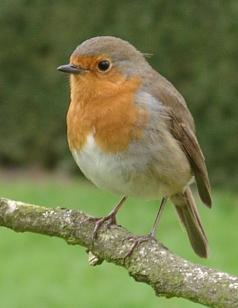

Crvendac je mala ptica, velicine vrapca, dužine oko 15 cm. S gornje strane (leda, rep i krilo) je maslinasto-sive boje, dok su grlo i grudi kao celo i glava sa strane žutocrvene boje, odakle mu i potice ime. Trbuh je bijele boje. Ovako su obojeni mužjak i ženka, dok su mladunci neupadljive tamne boje.Ženka snese pet do šest jaja puta godišnje.Cucavci se izvaljuju nakon dva tjedna sjedenja roditelja na jajima.Vec su otprilike s petnaest dana starosti sposobni za samostalan život.Crvendac je ptica skitalica.Zimi se zadržava na podrucjima s boljom ponudom hrane.Hrani se ponajviše kukcima i malim puževima,ali uzima i biljne plodove.
| Crvendac |
|---|
|  |